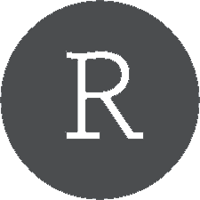

Introduction to 
Programming
PSE - M1 APE
Fall 2022
Introduction to

Programming
PSE - M1 APE
Fall 2022
The objective of this course is to provide you with the necessary bases in R programming to be able to carry out your empirical homeworks and research projects. The course is structured in 4 classes of 2 hours. No preliminary knowledge in programming is required, but part of the content of the last lecture is based on what you’re going to see in Econometrics I. Lectures will take place in the computer room R2-07 at Campus Jourdan, but feel free to bring up your own laptop (in that case install R and R Studio before the first class).
Material
Lecture 1
Lecture 2
Lecture 3
Lecture 4
Data Manipulation
Data visualization
R Markdown & LaTeX
Econometrics in R
Group 1
01/09
09:00-11:00
02/09
09:00-11:00
07/09
14:00-16:00
09:00-11:00
Group 2
01/09
11:15-13:15
02/09
11:15-13:15
05/09
09:00-11:00
11:15-13:15
Group 3
01/09
14:30-16:30
02/09
14:30-16:30
05/09
16:00-18:00
14:30-16:30
Cheatsheets


Functions glossary
References
This course is adapted from the one I teach in CPES-2, inspired by:
- Introduction to R, by H. Bull and P. Charousset. Paris School of Economics (2020)
- Advanced Mircoeconometrics, by D. Margolis and F. Libois. Paris School of Economics (2020)
- How to Lie with Graphics, by C. Bontemps. Toulouse School of Economics (2020)
- Introduction to Econometrics with R, by F. Oswald, V. Viers, P. Villedieu, and G. Kenedi. SciencesPo Dep. of Economics (2020)
- Introduction to Causal Inference, by L. Zabrocki. Paris Sciences et Lettres - CPES (2020)
- Geolocalized Datasets and Applications for Economics, by F. Libois and E. Madinier. Paris School of Economics (2020)
- Countless posts on stackoverflow and R-bloggers